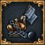

Turn the Table 扭轉形勢
| |
|---|---|
| 成就圖標 | |
|  | |
| 條件 | |
| 達成 | |
|
該國： | |
| 只適用於DLC征服天堂激活時。 |
要達成成就扭轉形勢，該國必須使其原本的殖民地宗主國成為他們的一個附庸國。
策略
以摩鹿加地區的兩個小國  特爾納特或
特爾納特或  蒂多雷開局，招募足量陸軍，並征服對方。成功征服之後，解散你全部的軍事單位，為將來的殖民地維護費節省每一分錢。在點出探索理念之前，慢慢積攢點數，切忌大手大腳。有了探索理念之後，建造三隊步兵與三艘運輸船，一名探險家和一名征服者。探索東澳大利亞並在那裏進行殖民。當你的殖民地獨立為殖民領時，就開始你的自毀進程吧！撕毀一切王室聯姻，侮辱周邊勢力。這樣你的國家在之後的戰鬥中就不可能找到任何盟友，最後再解散掉所有的海陸軍隊。
蒂多雷開局，招募足量陸軍，並征服對方。成功征服之後，解散你全部的軍事單位，為將來的殖民地維護費節省每一分錢。在點出探索理念之前，慢慢積攢點數，切忌大手大腳。有了探索理念之後，建造三隊步兵與三艘運輸船，一名探險家和一名征服者。探索東澳大利亞並在那裏進行殖民。當你的殖民地獨立為殖民領時，就開始你的自毀進程吧！撕毀一切王室聯姻，侮辱周邊勢力。這樣你的國家在之後的戰鬥中就不可能找到任何盟友，最後再解散掉所有的海陸軍隊。
在你將本國禍害的差不多的時候，切換到澳大利亞殖民區。建立起一支軍隊，並將他們運送到附近的小島上，之後就可以向你的前宗主國宣戰了。確保制海權，保持陸軍的跨海行進能力，然後攻佔原本的兩個省份。攻陷全國後，切記不要將其全部吞併，務必要附庸該國。成就達成！
其他策略
以  布列塔尼開局。除了廣交盟友以求存，並和鄰居
布列塔尼開局。除了廣交盟友以求存，並和鄰居  法蘭西保持良好關係之外，別的什麼都別做。在解鎖理念探索新世界的時點，布列塔尼應該已經擁有特立尼達島和一點點美洲大陸的視野，可以藉此先行探索南美北岸。然後快速點出機會之地，再將外交科技升至7級，此時開始殖民特立尼達，並逐步點滿探索理念。忽略所有財政開銷。在哥倫比亞殖民區內隨意殖民幾個省份，就會自動成立殖民領：布列塔尼屬哥倫比亞。將殖民領的獨立傾向提升到接近50%。直到整個哥倫比亞殖民區都被殖民（因為「炎熱」懲罰會花費較長時間），布列塔尼很可能會因殖民地維護費和滿額的部隊維護而破產。解散所有部隊，撕毀所有盟約並釋放殖民地。為了進一步減少難度，你也可以儘可能多貸款，給你的殖民地送禮，儘量降低國家穩定，甚至在每一個事件中都選擇較差的選項。
法蘭西保持良好關係之外，別的什麼都別做。在解鎖理念探索新世界的時點，布列塔尼應該已經擁有特立尼達島和一點點美洲大陸的視野，可以藉此先行探索南美北岸。然後快速點出機會之地，再將外交科技升至7級，此時開始殖民特立尼達，並逐步點滿探索理念。忽略所有財政開銷。在哥倫比亞殖民區內隨意殖民幾個省份，就會自動成立殖民領：布列塔尼屬哥倫比亞。將殖民領的獨立傾向提升到接近50%。直到整個哥倫比亞殖民區都被殖民（因為「炎熱」懲罰會花費較長時間），布列塔尼很可能會因殖民地維護費和滿額的部隊維護而破產。解散所有部隊，撕毀所有盟約並釋放殖民地。為了進一步減少難度，你也可以儘可能多貸款，給你的殖民地送禮，儘量降低國家穩定，甚至在每一個事件中都選擇較差的選項。
當你接手布列塔尼屬哥倫比亞時，大概應有5隊兵左右。再多建造幾隊兵以及數艘運輸船和輕型船。特立尼達是加勒比地區的一部分，所以當你獨立時特立尼達仍將留在布列塔尼手裏。偽造該地宣稱，以此為藉口進攻  布列塔尼。布列塔尼過於弱小，一戰即可附庸。
布列塔尼。布列塔尼過於弱小，一戰即可附庸。
除此之外絕大多數的小國只要理念與地理位置得當的話都可以做這個成就，包括但不限於愛爾蘭地區的諸多小國以及諸如  納瓦拉等適合逃亡到新大陸的國家
納瓦拉等適合逃亡到新大陸的國家
| 極易 | - |
| 簡單 | 阿布·巴卡爾二世的野心 • 遍佈每個大陸 • 巴黎一夜 • 門徒的啟蒙 • 有選票啦！ • 由一位國王來統治！ • 海峽對話 • 白公司 • 扭轉形勢 • 受保護的市場 • 在瘋狂邊緣 |
| 普通 | 體面的儲備 • 伊斯蘭世界 • 為了奧丁！ • 功夫 • 弒親禽獸 • 叩頭 • 既不神聖，也非日耳曼 • 重燃聖火 • 皇室權威 • 勃艮第的征服 • 立波聯邦 • 投票連勝 • 黑明施泰特的教訓 • 鎖國令 |
| 困難 | 波羅的海十字軍戰士 • 侵略擴張者 • 回到皮亞斯特王朝 • 黑傑克 • 祭司王約翰 • 應許之地 • 波西米亞人 • 貿易霸主 • 維多利亞三 • 費贊走廊 |
| 極難 | 阿爾巴尼亞抑或伊比利亞 • 一大塊藍 • 賈格納提神最重要的僕人 • 幸運的盧卡 • 大汗歸來 • 太陽之神 • 日不落印度帝國 • 80年環遊世界 |
| 瘋狂 | - |